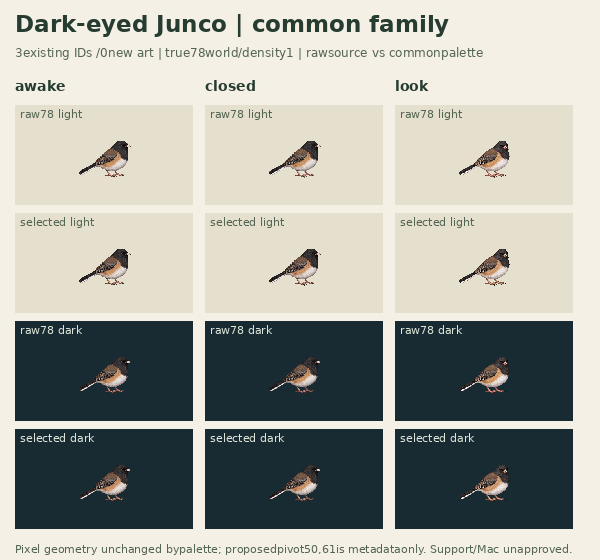
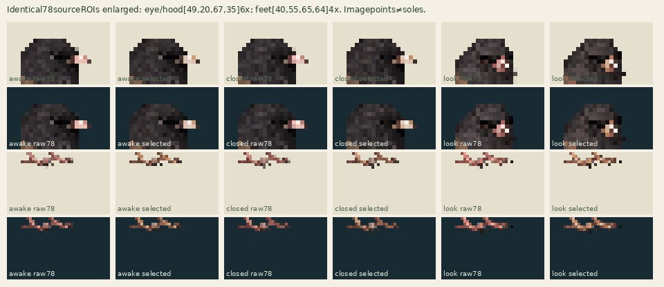

Three existing selecteddrawings,0newart/calls. Corrected round-eye awake, not rejectedrest. Allpanels draw the full birdcanvas at true78×78world; density1candidate keeps exactold78world size.
Legacy192 drawn78 · light
Raw78 · light
Runtime78 · light
Legacy192 drawn78 · dark
Raw78 · dark
Runtime78 · dark
30Hz inheritedblink60/3/27=3s (100msclosed); look30/12/30=2.4s; explicitquietidle90hold=3s. Sourceblinkloop retained inmetadata; this reviewplays oneepisode andholdsfinalawake, explicitreplay only. No bodybob, trajectory, posefit, footsnap or extraart.


Global192→78nearest, no cropping or perposeoffset. Legacycontinuouspivot49.5625,60.9375 → proposedinteger50,61 (delta+.4375,+.0625world) is metadataonly; bitmapnotshifted. Roundedtechnicalprobes are imagecomparisons, contacts[]/geometryReviewedfalse/supportWorldnull.
Common63opaque+transparent,alpha128,nodither. Shared pinnedstructuralchecker PASS2010rectangles/18252area; exact3RGBAreconstruction and partialalpha negativecontrol. This is pixelnormalization only, not fullschema/provenance/actionadapter/Mac admission. Independentappearance/geometryreviewpending. No privateLibraryIDs or browsercaptures.
Source audit · Shared structural receipt · Geometry/sampling